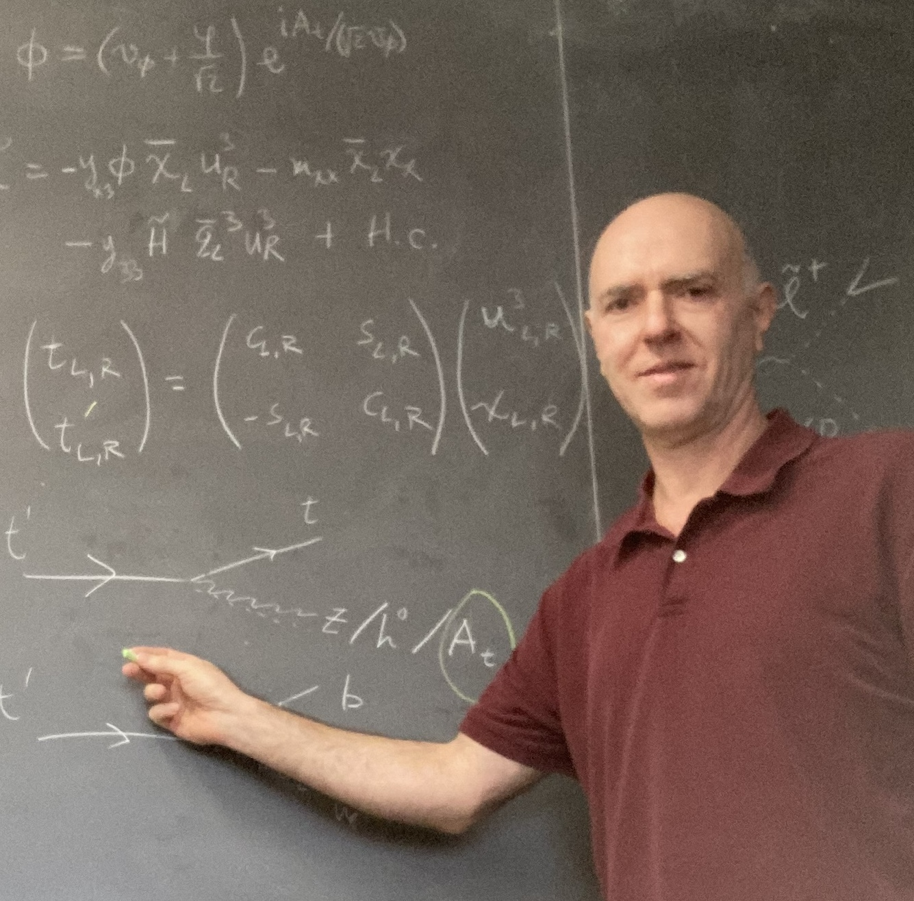

| Bogdan A. Dobrescu
Particle theorist at Fermilab
|

|
|
|
Scientist at Fermilab since 2002.
Previous position: Postdoc at Yale.
|
| Research interests: |
Beyond the Standard Model of particle physics.
LHC phenomenology. Higgs and other bosons. Dark matter. Vectorlike fermions, ... |
|
Conference talks:
Colloquium talks:
|
"Hidden interactions of quarks", University of Illinois at Chicago, 2014.
"Particles and interactions at the Large Hadron Collider",
Indiana Univ. - Purdue Univ., 2011.
"Mysteries of the TeV Scale", Northwestern Univ., 2010.
"Universal extra dimensions", Univ. of Arizona, 2006.
"Beyond the four known forces of nature", Univ. of California, Irvine 2005,
and Oklahoma State Univ., 2006.
|
Lectures at Summer Schools:
|